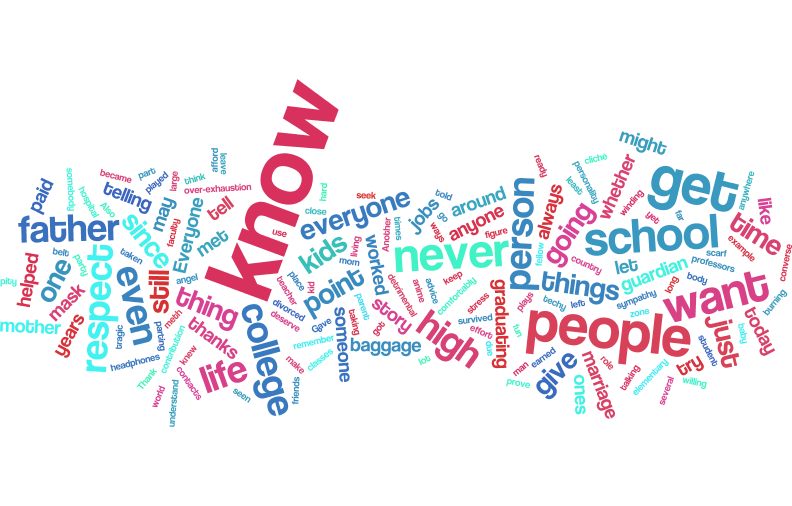

The modest proposal essay was a personal take on the satirical article by Jonathan Swift called a "Modest Proposal". The object of the essay was to find a problem in society that isn't widely known and create a satirical response to bring attention to it. For me, my topic was on the rising number of selfish and spoiled teenagers in America. For the article click here.
I believe this essay was one of my favorite essays I've written in school. It forced me out of my comfort zone to write something I've never done before, satire. Satire itself is a very difficult concept to pull off effectively. It is very easy to simply miss the point of the article and focus on having too shocking of a response. So it was certainly one of the more difficult articles I've written.
Despite never tackling the concept of satire before, I felt that this was one of the stronger essays I've written. One of my strongest points was the use of references and allusions, in order to get my point across without sounding too descriptive. I based most of my ideas on pop-culture references, e.g. Hunger Games and Fallout. Another piece I felt very confident in was the speech. I really had to go out of my comfort zone when making that, but I'm very glad I did as it really allowed me to immerse myself in the essay.
There was a lot of good I did with that essay, but there were some pieces that I skipped out on. I do feel the article as a whole was well written, but if I had spent a bit longer I feel it could have been better. Though I clearly failed on the art aspect, despite priding myself as an artist I clearly let that part of my assignment fall to the wayside. I had a good concept for it, but in the end I didn't manage my time well and was forced to make a poor auto-generated cartoon. In the end though I feel like this essay was a very good experience for me.
The Multi-Genre research essay was definitively my absolute favorite essay that I had written in my entire 4 years of high school, it can be found here. In short it was a research paper about a chosen topic, mine was "The Correlation between Graphic Media and Crime.", and it featured multiple genres of writing to convey your message.
It was the first time I got to both choose a non-fictional topic and still use my fictional story writing abilities in the essay. It really allowed me to do what I do best in writing, and that is writing stories. The fictional piece which was, "A Short Story of a Teenage Boy" on page 3, was still based on a real life concept and situation that happens far too often.
Outside of the fictional role of the paper the rest of the research paper I equally loved. I got to go out of the normal restrictions of school papers to get my point across and that included an article about pornography. I was able to use any legitamate article I found in order to get my message across. I enjoyed this because I believe we as seniors are adult enough to handle the real world...well most of us anyway.
While this piece was not technically an essay, it was a very important assignment to me as it allowed me to show what I really wanted to be in the next 5-10 years. It was a presentation on the future career or college you wanted to attend. The full presentation can be viewed here.
I've wanted to become an Indie Game Developer ever since entering High School, and it's a true passion of mine. I would give anything required to get to that level and I believe that this article allowed me to show both why I would do that, and what I've already done to start reaching for that goal.
This piece, here, was something that I created for a game in my ATC class. I plan to take this script further over the next few years and use it in a very large game project, and as it is it's currently over 200 pages. This excerpt is the opening scene. Looking back on it script writing was something I found a passion for in my senior year and I find it very interesting. Whereas in a normal English paper there's a list of rules that you have to follow, in script writing the rules are more a template that you can customize to your will. I also enjoy how dialog is very separate from the action sequences in script writing. You do this so you can easily give to another individual later and they know exactly how the scene you've written is supposed to look. It's less about crafting a world with descriptive language and more about creating that world with literal terminology, which works well with the more logical side of my brain.
Onto the actual article itself the weaknesses aren't readily apparent to the normal person, but for someone who reads scripts its clear I'm a novice. The correct terminology to use in which situation is something I still struggle to accomplish, as I try to get over using descriptive language and instead using more literal terms. That being said, this is definitely the best scene I've written, in terms of describing what is happening, and giving descriptions of characters.
Dear fellow classmates, staff, and faculty. The end of our years together is almost upon us, and I’m sure we’re all ready to get out of here and start our respective summer vacations. But, before we all part ways I just want to say a couple things, and give some parting advice. First of all, congratulations for those of you who are graduating on time, you’ve put the effort in even when you didn’t want to and you were close to burning out. Don’t let anyone tell you that you don’t deserve this moment, no matter how you might have been as a person, you survived 4 years of high school, so you’ve at least earned this. Next, for those of you going to college don’t fall into the trap that most college freshman do. Yes, college is a place to party, and you should have fun, and of course you should spend time on studying. But, the most important thing to do in college is to actually converse with the students and professors in your classes. The real world that we’re stepping into requires that you know somebody to get anywhere since everyone has a degree, so build your contacts while you can easily do so.
Something that should be taken into account for life in general, is to never judge a book by its cover. That cliché is still said today, and it still rings true. Everyone in life has a story, a personality, baggage, and a mask. At first all you’re going to see of a person is there mask. What they are willing to show or what they want people to think they’re like. If you truly want to know a person though, you’re going to have to get to know them. I’ll use myself as an example. Most people who know me in school outside of my friends, know me as that kid with the scarf hanging from his belt and the headphones around his neck. If you’ve overheard me talking, or seen some of the things I’ve done, you might know me as a funny, techy guy who plays games, watches anime, and loves energy drinks. What you don’t know, and never would unless I told you, is that my father was a drug dealer before he became a meth addict. I contracted pneumonia twice, once when I was a baby, and again in elementary school and nearly died from it. My parents have been divorced since I was around 5, and my mom worked 4 jobs at once at one point to keep me and my sister living comfortably since my father never paid child support. I’m telling you these things not to seek pity or sympathy, because there are people with far worse stories with mine. I’m telling you all this prove a point; that you never know someone until you try to get to know them. Some people aren’t as open with their baggage as I am and you should respect that, but always understand that everyone has a story and most of the time it’s the happiest people that have the most tragic ones.
Another thing you should know before graduating are the people that got you here and that you should give thanks to them. Everyone you’ve met paid a contribution in getting you here, whether they’ve helped or wronged you. Also, give special thanks to that one person who helped you the most, whether that’s a parent, guardian, teacher, student, or even yourself. For me it’s my mother. She dealt with a man that stole from her and even their own kids to buy drugs. Gave up her home and job to move across the country, just to try to make a broken marriage work, and only because she knew her kids should have a father figure. She left and played the role of both mother and father to her kids, when she saw that her marriage was only detrimental to them. She worked between 2-4 jobs to afford high rent just so her son could stay in the same school zone throughout middle and high school. Strained her body to the point of winding up in the hospital several times for a weak heart due to over-exhaustion and high stress. Despite all her faults and nagging, I could never respect anyone in my life more than her. She’s my guardian angel and I believe everyone in life has someone like this. You may not have met them yet, or you may not even realize you have, but they are out there, remember that.
There’s one last thing I want to say before I leave you all, and that is to always respect your loved ones. They’ve sacrificed a lot to get you here. But also to respect yourself, you’ve fought hard to get where you are and there’s still a long way to go to reach success, but you’re taking a large step today and don’t let any hater tell you otherwise. Thank you.
